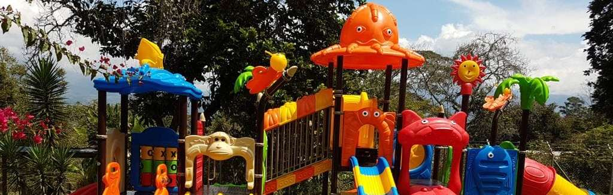

Parque Gorila
Referencia: CL23
módulos: Columna, siete plataformas, dos techos, dos escaleras, una escalera de trepar, un muro de escalar, un tobogán, un deslizadero curvo, un deslizadero doble, un deslizadero recto, un deslizadero en espiral, cuatro accesorios decorativos, agujero para pasar, barandillas, vallas, puentes de red, agujeros de red
materiales: 1. Piezas de plástico: plástico para ingeniería, LLDPE, a saber, polietileno lineal 2. Columna: tubo de acero galvanizado de diámetro Ø114mm y espesor de pared de 2,0mm. 3. La plataforma, escalera de recorrido y puente: se utiliza placa porosa laminada en frío de alta resistencia, con agujeros perforados de diámetro de 7,5mm, para evitar la acumulación de agua; tamaño: 1160×1160mm, 2,0mm de espesor, que puede soportar la carga de 200kg sin deformarse; todo ello adopta la soldadura de protección, pulido mecánico; terminación superficial: se utiliza el polvo de plástico de serie Aksu de Alemania para la pulverización electrostática y calentamiento a alta temperatura, para lograr una superficie resistente al desgaste, no desvanecida, no borrada y de color brillante. También puede ser envuelta por PVC, lo que facilitará la obtención de mayor flexibilidad y seguridad. 4. Tornillo: tornillos de acero inoxidable.
Ventajas: 1. Son de una gran variedad de productos de educación infantil, lo que le ofrece un amplio rango de opciones. Los productos de esta serie tienen el estilo internacional que se comprometen con la formación del horizonte y tolerancia de los niños. 2. Anti-UV, anti-estáticos, anti-agrietamiento. Personalizados por colores brillantes, resistentes al sol sin desvanecerse. Seguros, no tóxicos y ambientalmente amigables. 3. De material anti-envejecimiento y colores ricos. Los productos se moldean por rotación por una sola vez en calderas de desarrollo propio y moldes profesionales y están libres de bordes afilados y rebabas a través del pulido. Los productos son de alta resistencia y excelente solidez, por lo que puede capacitar plenamente la habilidad de trepar y equilibrio. 4. Con tecnología patentada, son únicos. 5. parques adecuados para primera infancia. 6. incluye instalación en el sitio solicitado.